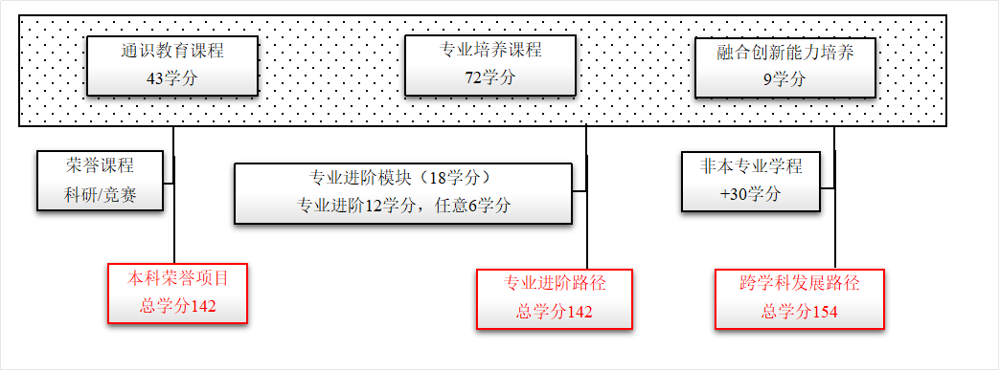
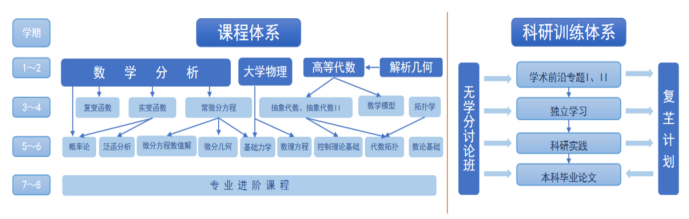

官方方案内嵌图
本年级原图索引


数学科学学院 · 普通本科生 · 主修
官方Word原件 · 原始接口JSON · 官方详情 · 本年级交互图谱
{"requiredSubModuleNum": 0, "requiredCredits": 142.0, "postCreditsRequired": 0.0, "postRequiredCourseNum": 0, "integrationCreditsRequired": 0.0, "integrationRequiredCourseNum": 0, "requiredCourseNum": 0, "autoSubModuleNum": false, "showRequiredCredits": "142", "requireAny": true, "requireAll": false}通识教育课程包括通识教育核心课程和专项教育课程。
{"requiredSubModuleNum": 2, "requiredCredits": 43.0, "postCreditsRequired": 0.0, "postRequiredCourseNum": 0, "integrationCreditsRequired": 0.0, "integrationRequiredCourseNum": 0, "requiredCourseNum": 0, "autoSubModuleNum": false, "showRequiredCredits": "43", "requireAny": false, "requireAll": false}要求修读26学分，含思想政治理论课19学分，七大模块课程6学分（美育学分不少于2学分），大学生国家安全教育1学分。
{"requiredSubModuleNum": 3, "requiredCredits": 26.0, "postCreditsRequired": 0.0, "postRequiredCourseNum": 0, "integrationCreditsRequired": 0.0, "integrationRequiredCourseNum": 0, "requiredCourseNum": 11, "autoSubModuleNum": false, "showRequiredCredits": "26", "requireAny": false, "requireAll": false}要求修读17学分。
{"requiredSubModuleNum": 5, "requiredCredits": 17.0, "postCreditsRequired": 0.0, "postRequiredCourseNum": 0, "integrationCreditsRequired": 0.0, "integrationRequiredCourseNum": 0, "requiredCourseNum": 0, "autoSubModuleNum": false, "showRequiredCredits": "17", "requireAny": false, "requireAll": false}专业培养课程包括学科基础课程和专业核心教育课程。
{"requiredSubModuleNum": 2, "requiredCredits": 72.0, "postCreditsRequired": 0.0, "postRequiredCourseNum": 0, "integrationCreditsRequired": 0.0, "integrationRequiredCourseNum": 0, "requiredCourseNum": 0, "autoSubModuleNum": false, "showRequiredCredits": "72", "requireAny": false, "requireAll": false}要求修读自然科学类基础课程18学分。大学物理类课程必选8学分，两组选一，多余学分可作任选。
{"requiredSubModuleNum": 2, "requiredCredits": 18.0, "postCreditsRequired": 0.0, "postRequiredCourseNum": 0, "integrationCreditsRequired": 0.0, "integrationRequiredCourseNum": 0, "requiredCourseNum": 0, "autoSubModuleNum": false, "showRequiredCredits": "18", "requireAny": false, "requireAll": false}要求修读54学分（部分课程学分可用荣誉课程学分替换）。
{"requiredSubModuleNum": 2, "requiredCredits": 54.0, "postCreditsRequired": 0.0, "postRequiredCourseNum": 0, "integrationCreditsRequired": 0.0, "integrationRequiredCourseNum": 0, "requiredCourseNum": 0, "autoSubModuleNum": false, "showRequiredCredits": "54", "requireAny": false, "requireAll": false}{"requiredSubModuleNum": 0, "requiredCredits": 39.0, "postCreditsRequired": 0.0, "postRequiredCourseNum": 0, "integrationCreditsRequired": 0.0, "integrationRequiredCourseNum": 0, "requiredCourseNum": 0, "autoSubModuleNum": false, "showRequiredCredits": "39", "requireAny": true, "requireAll": false}| 代码 | 课程 | 学分 | terms原字段 | 必修字段 |
|---|---|---|---|---|
| MATH10020 | 解析几何 | 4.0 | TERM_1 | True |
| MATH10009 | 高等代数Ⅰ | 5.0 | TERM_1 | True |
| MATH10019 | 高等代数II | 5.0 | TERM_2 | True |
| MATH20004 | 数学分析AⅢ | 5.0 | TERM_3 | True |
| MATH20014 | 常微分方程 | 4.0 | TERM_3 | True |
| MATH20015 | 抽象代数 | 4.0 | TERM_3 | True |
| MATH20016 | 复变函数 | 4.0 | TERM_4 | True |
| MATH20017 | 实变函数 | 4.0 | TERM_4 | True |
| MATH20018 | 拓扑学 | 4.0 | TERM_4 | True |
需在本模块11门课程中选5门，超过5门可以算作专业进阶学分。；11选5
{"requiredSubModuleNum": 0, "requiredCredits": 15.0, "postCreditsRequired": 0.0, "postRequiredCourseNum": 0, "integrationCreditsRequired": 0.0, "integrationRequiredCourseNum": 0, "requiredCourseNum": 0, "autoSubModuleNum": false, "showRequiredCredits": "15", "requireAny": true, "requireAll": false}| 代码 | 课程 | 学分 | terms原字段 | 必修字段 |
|---|---|---|---|---|
| MATH20013 | 抽象代数II | 3.0 | TERM_4 | False |
| MATH20009 | 数学模型 | 3.0 | TERM_4 | False |
| MATH30003 | 概率论 | 3.0 | TERM_5、TERM_6、TERM_7、TERM_8 | False |
| MATH30004 | 泛函分析 | 3.0 | TERM_5、TERM_7 | False |
| MATH20010 | 微分几何 | 3.0 | TERM_5、TERM_7 | False |
| MATH30002 | 同调论 | 3.0 | TERM_5、TERM_7 | False |
| MATH50018 | 控制理论基础 | 3.0 | TERM_5、TERM_7 | False |
| MATH20011 | 数论基础 | 3.0 | TERM_5、TERM_7 | False |
| MATH30005 | 数理方程 | 3.0 | TERM_5、TERM_6、TERM_7、TERM_8 | False |
| MATH40010 | 微分方程数值解法 | 3.0 | TERM_6、TERM_8 | False |
| MECH30005 | 基础力学 | 3.0 | TERM_6、TERM_8 | False |
包括专业进阶路径、荣誉项目、跨学科发展和辅修学士学位路径，要求在院系专业导师指导下选择1条发展路径，按路径要求修读课程。
{"requiredSubModuleNum": 0, "requiredCredits": 0.0, "postCreditsRequired": 0.0, "postRequiredCourseNum": 0, "integrationCreditsRequired": 0.0, "integrationRequiredCourseNum": 0, "requiredCourseNum": 0, "autoSubModuleNum": false, "showRequiredCredits": "0", "requireAny": true, "requireAll": false}修满18学分。要求在专业进阶模块修读至少12学分，学分不足部分可在全校所有本科生课程中任意选修。
{"requiredSubModuleNum": 0, "requiredCredits": 0.0, "postCreditsRequired": 0.0, "postRequiredCourseNum": 0, "integrationCreditsRequired": 0.0, "integrationRequiredCourseNum": 0, "requiredCourseNum": 0, "autoSubModuleNum": false, "showRequiredCredits": "18", "requireAny": true, "requireAll": false}{"requiredSubModuleNum": 0, "requiredCredits": 12.0, "postCreditsRequired": 0.0, "postRequiredCourseNum": 0, "integrationCreditsRequired": 0.0, "integrationRequiredCourseNum": 0, "requiredCourseNum": 0, "autoSubModuleNum": false, "showRequiredCredits": "12", "requireAny": true, "requireAll": false}| 代码 | 课程 | 学分 | terms原字段 | 必修字段 |
|---|---|---|---|---|
| MATH50002 | 科研实践 | 3.0 | TERM_6、TERM_7、TERM_8 | False |
| MATH40008 | 生产实习 | 1.0 | TERM_7 | False |
| MATH40011 | 小波分析 | 3.0 | SPRING、AUTUMN | False |
| MATH40012 | 计算机辅助几何设计 | 3.0 | SPRING、AUTUMN | False |
| MATH30006 | 数学金融学 | 3.0 | SPRING、AUTUMN | False |
| MATH40013 | 应用几何 | 3.0 | SPRING、AUTUMN | False |
| MATH30007 | 利息理论 | 3.0 | SPRING、AUTUMN | False |
| MATH30008 | 计算方法 | 3.0 | TERM_5 | False |
| MATH40016 | 分形几何 | 3.0 | SPRING、AUTUMN | False |
| MATH30009 | 非寿险精算数学 | 3.0 | SPRING、AUTUMN | False |
| MATH30010 | 寿险精算数学 | 3.0 | SPRING、AUTUMN | False |
| MATH40020 | 数字信号处理 | 3.0 | SPRING、AUTUMN | False |
| MATH40021 | 时间序列分析 | 3.0 | SPRING、AUTUMN | False |
| MATH30012 | 测度论 | 3.0 | SPRING、AUTUMN | False |
| MATH40023 | 非线性系统 | 3.0 | SPRING、AUTUMN | False |
| MATH40024 | 科学计算 | 3.0 | SPRING、AUTUMN | False |
| MATH20012 | 数学分析原理 | 5.0 | SPRING、AUTUMN | False |
| MATH40025 | 数据科学中的现代逼近方法 | 3.0 | SPRING、AUTUMN | False |
| MATH40027 | 统计方法选讲 | 3.0 | SPRING、AUTUMN | False |
| MATH30016 | 应用随机过程 | 3.0 | SPRING、AUTUMN | False |
| MATH40028 | 统计推断 | 3.0 | SPRING、AUTUMN | False |
| MATH60034 | 遍历论 | 3.0 | SPRING、AUTUMN | False |
| MATH50023 | 变分法与偏微分方程 | 3.0 | SPRING、AUTUMN | False |
| MATH40031 | 拓扑群 | 3.0 | SPRING、AUTUMN | False |
| MATH30019 | 线性与非线性规划 | 3.0 | SPRING、AUTUMN | False |
| MATH30020 | 最优化方法 | 3.0 | SPRING、AUTUMN | False |
| MATH30021 | 金融中的随机分析 | 3.0 | SPRING、AUTUMN | False |
| MATH40034 | 深度学习 | 3.0 | SPRING、AUTUMN | False |
| MATH30022 | 微分几何续论 | 3.0 | SPRING、AUTUMN | False |
| MATH40035 | 布朗运动 | 3.0 | SPRING、AUTUMN | False |
| MATH40036 | 概率模型与随机计算选讲 | 3.0 | SPRING、AUTUMN | False |
| MATH40037 | Current理论 | 3.0 | SPRING、AUTUMN | False |
| MATH40038 | 微局部分析 | 3.0 | SPRING、AUTUMN | False |
| MATH60037 | 现代调和分析 | 3.0 | SPRING、AUTUMN | False |
| MATH40040 | 高维概率及其应用 | 3.0 | SPRING、AUTUMN | False |
| MATH50033 | 数学建模及应用 | 3.0 | SPRING、AUTUMN | False |
| MATH40042 | 现代数据科学选讲 | 3.0 | SPRING、AUTUMN | False |
| MATH30023 | 金融衍生品数学导论 | 3.0 | SPRING、AUTUMN | False |
| MATH40043 | 几何群论 | 3.0 | SPRING、AUTUMN | False |
| STAT30013 | 现代统计模型 | 3.0 | SPRING、AUTUMN | False |
| STAT30012 | 多元统计原理与基础 | 3.0 | SPRING、AUTUMN | False |
| MATH40006 | 双曲几何 | 3.0 | SPRING、AUTUMN | False |
| MATH50008 | 数理方程进阶 | 3.0 | SPRING、AUTUMN | False |
| MATH50007 | 谱理论基础 | 3.0 | SPRING、AUTUMN | False |
| MATH40030 | 现代偏微分方程 | 3.0 | SPRING、AUTUMN | False |
| MATH40019 | 复分析 | 3.0 | SPRING、AUTUMN | False |
| MATH40044 | 代数拓扑基础 | 3.0 | SPRING、AUTUMN | False |
| MATH50036 | 现代微分几何基础 | 3.0 | SPRING、AUTUMN | False |
| MATH40029 | 李群和李代数 | 3.0 | SPRING、AUTUMN | False |
| MATH40045 | 现代常微分方程 | 3.0 | SPRING、AUTUMN | False |
| MATH40046 | 索伯列夫空间 | 3.0 | SPRING、AUTUMN | False |
| MATH60033 | 随机分析 | 3.0 | SPRING、AUTUMN | False |
| MATH40047 | 物理学与偏微分方程 | 3.0 | SPRING、AUTUMN | False |
| MATH50038 | 代数几何 | 3.0 | SPRING、AUTUMN | False |
| MATH50039 | 现代微分几何 | 3.0 | SPRING、AUTUMN | False |
| MATH50026 | 代数拓扑 | 3.0 | SPRING、AUTUMN | False |
| MATH50041 | 数值分析与科学计算 | 3.0 | SPRING、AUTUMN | False |
| MATH50042 | 数值代数及其应用 | 3.0 | SPRING、AUTUMN | False |
| MATH50043 | 应用分析中的科学计算 | 3.0 | SPRING、AUTUMN | False |
| MATH40005 | 高等泛函分析Ⅰ | 3.0 | SPRING、AUTUMN | False |
| MATH50005 | 高等泛函分析Ⅱ | 3.0 | SPRING、AUTUMN | False |
| MATH50019 | 抽象代数续论 | 3.0 | SPRING、AUTUMN | False |
| MATH50027 | 现代概率论基础I | 3.0 | SPRING、AUTUMN | False |
{"requiredSubModuleNum": 0, "requiredCredits": 0.0, "postCreditsRequired": 0.0, "postRequiredCourseNum": 0, "integrationCreditsRequired": 0.0, "integrationRequiredCourseNum": 0, "requiredCourseNum": 0, "autoSubModuleNum": false, "showRequiredCredits": "0", "requireAny": true, "requireAll": false}修满30学分。要求修读2个非本专业独立开设的学程，可选择专业学程或跨学科学程。学分不足部分可在全校所有本科生课程中任意选修。 学程课程详见教务处学程项目网页，下载地址：https://jwc.fudan.edu.cn/（复旦大学教务处）专业培养-常用文档。完成学程修读要求的学生可获得相应的学程证书。
{"requiredSubModuleNum": 0, "requiredCredits": 0.0, "postCreditsRequired": 0.0, "postRequiredCourseNum": 0, "integrationCreditsRequired": 0.0, "integrationRequiredCourseNum": 0, "requiredCourseNum": 0, "autoSubModuleNum": false, "showRequiredCredits": "30", "requireAny": true, "requireAll": false}修满30学分。要求修读1个创新创业学院开设的创新创业学程，以及1个非本专业独立开设的学程。学分不足部分可在全校所有本科生课程中任意选修。创新创业学程课程详见教务处学程项目网页，下载地址：https://jwc.fudan.edu.cn/（复旦大学教务处）专业培养-常用文档。
{"requiredSubModuleNum": 0, "requiredCredits": 0.0, "postCreditsRequired": 0.0, "postRequiredCourseNum": 0, "integrationCreditsRequired": 0.0, "integrationRequiredCourseNum": 0, "requiredCourseNum": 0, "autoSubModuleNum": false, "showRequiredCredits": "30", "requireAny": true, "requireAll": false}要求至少修读本专业进阶课程12学分和1个外院系开设的辅修学士学位项目，辅修学士学位应与主修学士学位归属不同的本科专业大类。 辅修学士学位项目课程设置详见教务处辅修学士学位项目网页，下载地址：https://jwc.fudan.edu.cn/（复旦大学教务处）专业培养-常用文档。完成辅修学士学位项目修读要求，且达到学校毕业和学位授予要求的学生可获得相应的辅修学士学位证书。
{"requiredSubModuleNum": 0, "requiredCredits": 0.0, "postCreditsRequired": 0.0, "postRequiredCourseNum": 0, "integrationCreditsRequired": 0.0, "integrationRequiredCourseNum": 0, "requiredCourseNum": 0, "autoSubModuleNum": false, "showRequiredCredits": "52", "requireAny": true, "requireAll": false}多元发展路径中，修完12学分专业进阶课程或1个辅修学士学位项目可以冲抵1个学程，专业培养和多元发展路径共享的课程只计算一次学分。
{"requiredSubModuleNum": 0, "requiredCredits": 0.0, "postCreditsRequired": 0.0, "postRequiredCourseNum": 0, "integrationCreditsRequired": 0.0, "integrationRequiredCourseNum": 0, "requiredCourseNum": 0, "autoSubModuleNum": false, "showRequiredCredits": "0", "requireAny": true, "requireAll": false}{"requiredSubModuleNum": 0, "requiredCredits": 9.0, "postCreditsRequired": 0.0, "postRequiredCourseNum": 0, "integrationCreditsRequired": 0.0, "integrationRequiredCourseNum": 0, "requiredCourseNum": 0, "autoSubModuleNum": false, "showRequiredCredits": "9", "requireAny": true, "requireAll": false}| 代码 | 课程 | 学分 | terms原字段 | 必修字段 |
|---|---|---|---|---|
| 101 | 无学分讨论班 | False | ||
| 102 | 复芏计划(FDUROP) | False | ||
| MATH40001 | 学术前沿专题Ⅰ | 1.0 | TERM_3 | True |
| MATH40002 | 学术前沿专题Ⅱ | 1.0 | TERM_4 | True |
| MATH50001 | 独立学习 | 3.0 | TERM_5 | True |
| MATH40033 | 毕业论文(含专题讨论) | 4.0 | TERM_8 | True |
| MATH50002 | 科研实践 | 3.0 | TERM_6、TERM_7、TERM_8 | False |
来源为本年级官方公开方案的2026-11-26快照；不代表入学当年未修订原版。原件权利归原权利人，未取得单独再利用许可声明。

